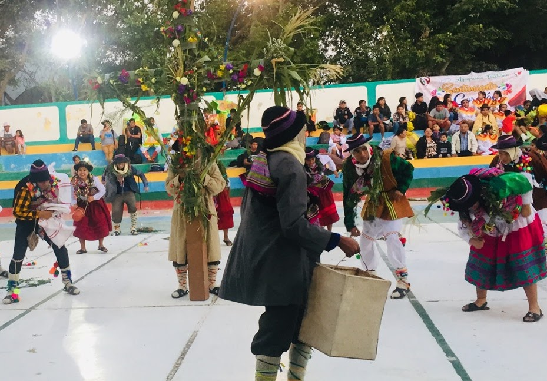
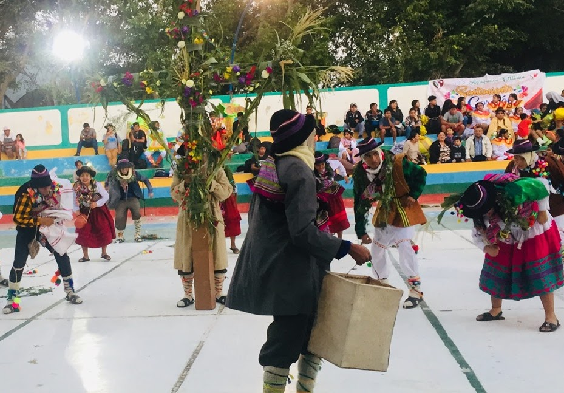
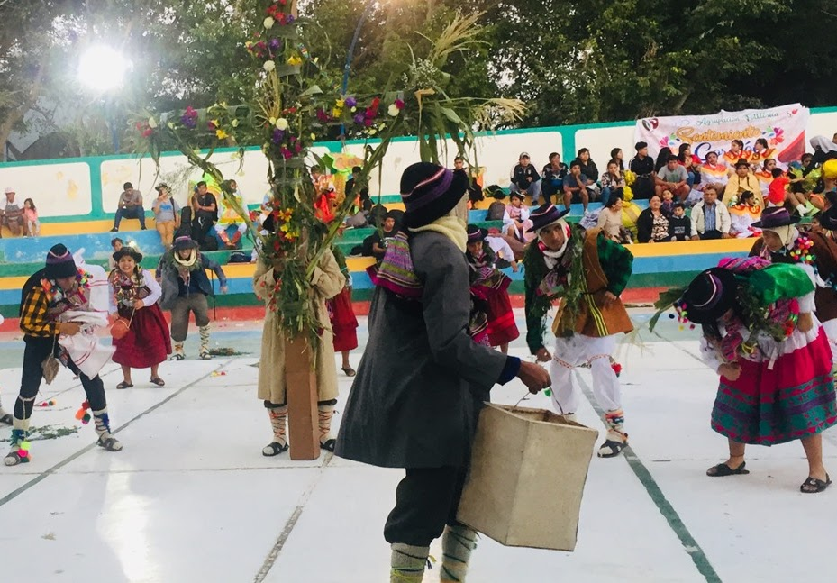
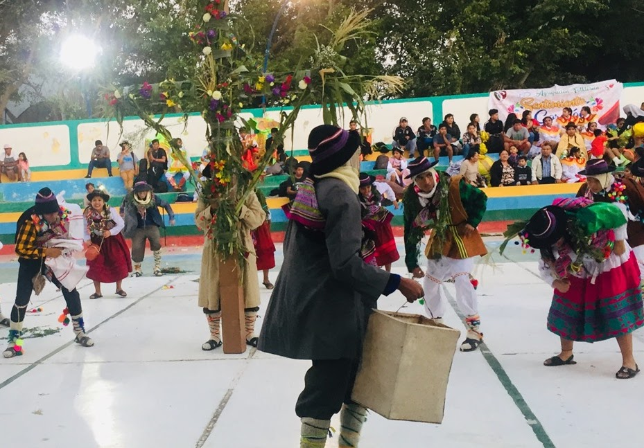
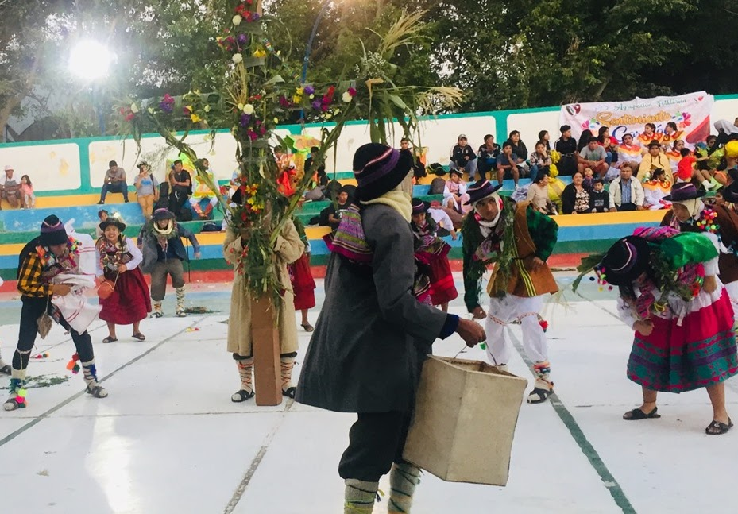

Ediciones del concurso
Cada edición representa una etapa importante en la historia de Catacaos, Color y Tradición.
6+
Ediciones documentadas
100+
Agrupaciones participantes
2017
Año de inicio
Una historia contada año tras año
Un recorrido visual por los años que han marcado el crecimiento del concurso.

2017 · El comienzo de una tradición
Nace oficialmente el Concurso de Danzas y Estampas Folclóricas Catacaos, Color y Tradición.
Ver edición →
Crecimiento del concurso
El evento continúa fortaleciéndose con mayor participación y una propuesta artística más sólida.
Ver edición →
Consolidación cultural
Una edición que reafirma el valor del concurso como espacio de identidad, danza y tradición.
Ver edición →
2020 · Una edición diferente
El concurso se adapta a un nuevo contexto y mantiene viva la esencia cultural desde otra modalidad.
Ver edición →
Retorno presencial
La danza vuelve a reunir a agrupaciones, público y comunidad en una nueva etapa del concurso.
Ver edición →
2024 · Nuevas generaciones en escena
La edición incorpora nuevas propuestas y fortalece la participación de agrupaciones infantiles.
Ver edición →